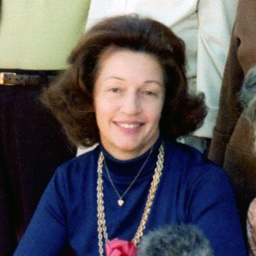

|
|
| 
June La Rue SCOGGAN (1923-2011) |
June La Rue SCOGGAN
June and Don were such loving people, who were so very kind to me for all the years I knew them while they lived in Newbury Park, California. I greatly miss them and especially Randy, but am left with wonderful memories of their entire family.
-- U.S. 1940 Census June married Donald Lawrence HALLER. (Donald Lawrence HALLER was born on 22 May 1926 in Detroit, Wayne County, Michigan and died on 10 Feb 2003 in Carlsbad, San Diego County, California.) |
 Another name for June was June SCOGGIN.
Another name for June was June SCOGGIN.